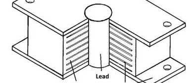

资料翻译：隔震技术的早期历史 | Seismic isolation: Early history
Seismic isolation: Early history
隔震技术的发展史
Nicos Makris
原载Earthquake Engineering and Structural Dyanmics
First published: 23 September 2018 https://doi.org/10.1002/eqe.3124
郑哲 译
摘要：隔震或“抗震基础隔震”是一种地震保护策略，旨在将结构的运动与地面震动分离，从而减小结构内力。隔震技术作为最有效和最成功的抗震保护技术，现已成为替代传统能力设计的成熟可行的方案，并已在全球众多桥梁，建筑物和其他特殊结构中使用。本文记录了隔震技术的起源和早期发展（直到20世纪90年代初）。
关键词：凹面滑动支座，弹性支座，历史记录，响应修正，抗震设防
1 引言 INTRODUCTION
隔震是通过使用某种类型的支座将建筑物运动与地面震动“解耦”，从而保护结构免受地震破坏性影响的概念。在近几个世纪，该设计概念受到世界上诸多国家的欢迎。通常的经验是：在地面震动时，如果沿着滑动界面的摩擦系数低于地面峰值加速度（PGA）与重力加速度的比值，自立式结构将滑动。
1870年，加利福尼亚州旧金山市的Jules Touaillon获得了一项改进建筑物的建造方法的美国专利。该建造方法可以减少地震冲击对建筑物影响。一些出现在Touaillon 1870年专利中的图纸非常值得注意。这些图纸展示了一个支撑在隔震系统上的建筑物的正视图。该系统由一系列相对的凹面球面组成（图1所示的Touaillon图中的c和c'），相对的凹球面被一些圆球分开。Touaillon解释到：
“......板c的上表面和板c'的下表面都有凹陷，其形状为一段半径远大于分隔圆球的半径的球形..上述物体的重量将导致板c和c'和小球恢复原来的相对位置”。
显然，Touaillon意识到隔震是他设计的凹球面大半径的结果，而结构能回到原始的中心位置是重力作用的结果。因此，早在1870年提出的隔震系统，就包含了现代双凹球面滑动支座隔震系统的大多数概念。

图1 Jules Touaillon的1870隔震结构由隔震系统c-c'支撑。隔震系统c-c'由一系列相对的凹面球面组成，凹球面由圆球分开。（详细构造参见结构图下面的隔震系统的平面图和横截面图）这个拥有150年历史的地震隔震系统提出了现代先进的双凹球面支座支座隔震系统的大部分独特概念。
在Jules Touaillon的开创性专利后近四十年，来自德国的J. Bechtold获得了美国专利。该项专利是将一个抗震建筑物支撑在一块刚性板上，再将刚性板安装在松散的卵石、砾石上或硬质材料球上，以可滑动的方式支座基础板。J.Bechtold解释到：
“在地震作用下，危险是从建筑物的刚性基础中积累起来的，最好的避免震害的办法是将整个建筑物放置在具有合适承载力且不与地面刚性连接的刚性基础板上。“
这一措辞重申了现代隔震技术中的两个关键概念：A，具有足够的承载能力；以及B，足以令人满意地将建筑物运动与地面震动“解耦”。
1908年，意大利Reggio‐Messina地震造成大约16万人丧生之后，一个由执业工程师和大学教授组成的委员会成立了。该委员会提出两项建议，其中一项建议是用一层沙或用滚筒将建筑物与地基分隔开；而另一项建议则支持固定基础。意大利委员会最终决定采用固定基础。尽管如此，关于建筑物在一层沙上滑动的可选建议正式将隔震的概念引入欧洲。1909年，来自英国Scarborough的医生J. A. Calantarients申请了一项有关抗震设计方法的英国专利，该专利建议将建筑物与其基础用一层沙子分开。该专利详细描述了一种能防止建筑物在大风中移动抗风支座。同时，在认识到建筑物与其基础之间存在大量预期位移后，他表明天然气、供水和污水处理设施需要采用特殊连接。
现代隔震技术的首次著名应用，是Frank Lloyd Wright设计日本东京帝国酒店。该酒店于1921年完工。在酒店所在地，有一层8英尺厚的优良土壤，在其下方有60至70英尺厚的抗剪强度极小的软泥层。这层软泥层在Wright看来是一个缓解地震冲击的“良好缓冲垫”。 Wright选择一系列间隔很小的短桩支撑建筑物，这些短桩仅穿透软泥层的顶部。建成后不久，帝国酒店在1923年的特大地震中表现得非常好。
十年时间内，来自新西兰的R. W. de Montalk获得了一项美国专利。该专利提出了一种方法，该方法能吸收或最小化由地震或振动对建筑物产生的冲击。振动是由繁重的交通或地球表面的其他干扰引起的。RW de Montalk解释到：
“这项发明包括一种基础，我称之为severer。该基础设置在建筑物的底部和地基之间，是由能吸收或最小化冲击的材料组成的，从而能保护建筑物“。
因此，对于术语“吸收”，de Montalk引入了能量耗散的概念——这是现代隔震实践中的第三个关键概念。
自20世纪20年代以来，发生了一些偶然的事件。其中一些采用了较低的失效机制来设计的建筑物在地震中反而幸存下来，而邻近的建筑物却倒塌了。例如1933年加利福尼亚州长滩地震期间，几座未加固的砖石建筑物仅受轻微损坏，因为它们能够在地基梁上滑动。
2 日本隔震技术的早期概念
EARLY CONCEPTS OF SEISMIC ISOLATION ADVANCED IN JAPAN
1876年到1895年间，英国地质学家和采矿工程师John Milne被任命为东京帝国大学的采矿和地质学教授。在此期间，Milne提出了一个隔震结构的例子，建筑结构位于球体上方，球体放置在碟形边缘（凹陷）的铸铁铁板上，铸铁铁板位于桩的顶部。在球的上方，附着在建筑物上的铸铁板略微凹陷，与球下面的铁板类似。该建筑物安装了检测设备，经检验其显然经受住了地震运动。1885年，米尔恩向英国科学促进会报告了他的实验。
1992年，美国国家标准与技术研究院（NIST）发表了两卷报告。该报告是关于建筑物和其他结构的隔震和被动能量消散系统的。这些从日文翻译而来的文献，提供了评估隔震和耗能系统的指南，以及建筑物和其他结构中能使用的系统目录。日本的原始报告由日本建筑中心在日本建设部（MOC）的赞助下发布。日本建筑中心将这些报告提供给NIST，以便将其翻译成英文并出版。
1992年NIST报告的第一卷对日本早期隔震研究进展的进行了全面回顾。该报告开始于Kozo Kawai在1891年12月在日本建筑学会的Kenchiku Zasshi期刊上发表的一篇论文，其标题为“地震中没有最大振动的结构。”该论文讨论了一个以放置在建筑物基础上的几个正交的圆柱形原木层为支撑的建筑物。NIST 在1992年的报告还讨论了1923年关东大地震后在日本提出的一些隔震的新观点，其中包括Okiie Yamashita 1924年提出的隔震系统。该系统由两个相对的凹面圆盘组成，这两个圆盘被一个圆球隔开，这个系统非常类似于Jules Touaillon在半个多世纪以前提出的隔震系统，也类似于今天的多凹球面滑动隔震系统。在20世纪20年代末期，Ryuichi Oka提出了一种系统，其中建筑物的基础柱支撑在一个允许在柱底部水平位移的半球形表面上，而球形接头处的摩擦能提供能量耗散的途径。这种早期的隔震系统在日本的几座建筑物中得到了应用，包括1934年Himeji分公司的钢筋混凝土建筑和Fudo Chokin银行的Shimonoseki分行的建筑。Fujita也报告了这两个隔震应用实例。
20世纪80年代初，东京大学正在进行有关隔震的系统研究; 在这段时间里，日本各种建筑公司对天然橡胶支座隔震系统进行了实验测试。
3 振动隔离 VIBRATION ISOLATION
在第二次世界大战期间和之后，机械和航空航天工业有了重大发展。到20世纪50年代后期，振动隔离是一个很好理解的主题，并被定义为由激励引起的系统响应。在振动隔离有关的文献中，通过使用弹性支撑来减小振动，并且在稳态状态期间，振动隔离是传递性的完善。因此，随着20世纪50年代后期振动隔离理论的完善，可以认为振动隔离（将设备放置弹性支撑元件顶部）与建筑隔震（将整个土木结构安置在弹性支座顶部）之间的唯一区别仅仅是规模和工程训练的问题。尽管如此，即使在二十年后的20世纪70年代，只有少数几座隔震建筑建成。部分原因是传统结构工程师不信任在建筑物基础层特意地引入柔性支座这一想法。
20世纪60年代，在A. G. Thomas博士，A. N. Gent博士和Peter Lindley博士的领导下，位于英国的马来西亚橡胶生产者研究协会(MRPRA——现在的 Tun Abdul Razac 研究中心)进行了关于建筑物隔震的橡胶支座力学性能的最初研究。他们首先将这种支座应用于桥梁支座，然后应用于隔震的英国住宅、医院和酒店。第一幢使用天然橡胶支座进行地面低频振动隔离的建筑是1966年建在伦敦地铁站上方的公寓楼。在英国，已使用天然橡胶隔离技术完成许多类似的项目。其中包括一个低成本的公共住宅区，该住宅毗邻两条允许24小时通行的8车道铁路线，也包括诸多酒店以及一些医院。这种振动隔离的方法同样适用于音乐厅。
4 世界各地隔震技术的早期应用
EARLY APPLICATIONS OF SEISMIC ISOLATION AROUND THE WORLD
马其顿共和国斯科普里（Skopje, Republic of Northern Macedonia）的一所小学显然是第一次将橡胶用于建筑物的地震保护的建筑。该建筑于1969年完工，是一幢三层混凝土结构的建筑，并由大块未加强天然橡胶支撑。由于支撑缺乏水平向的加固，隔震系统沿垂直方向柔度很大【译者注：由于橡胶中没有钢板，所以竖向刚度不足】。因此，建筑物的水平和摇摆频率间隔很小，导致水平、垂直和摇摆模式的不利耦合。 实用的隔震支座是带有水平钢板层的叠层钢板橡胶支座——水平钢板层是隔震系统承载能力的关键因素。由于水平加强钢板的存在，该隔震支座在垂直方向上刚度很大，同时在水平方向上保持柔性，从而产生隔震效果。
早期将天然橡胶叠层隔震支座用于隔震的建筑是法国马赛（Marseilles）附近Lambesc镇上的三层隔震学校。使用的隔震器直径为300mm，有20层，总橡胶厚度为40mm，天然橡胶层被层压到钢板上。该学校由152个隔震器支撑。已隔震学校的自振周期约为1.70s。在斯坦福大学的John A. Blume地震工程研究中心的振动台上进行了这些被称为Gapec隔震器的振动台实验。试验后，Gapec隔震器被安装在加利福尼亚州一家发电厂的断路器下。在马赛隔震学校建成后，隔震系统的设计师Giles Delfosse在其邻近的社区建造了三座隔震的房屋，并在法国Toulon为法国海军的三层建筑设计了隔震系统。
俄罗斯的Sebastopol建造了一座七层钢筋混凝土建筑，该建筑用鸡蛋形钢作为支撑（ovoids）。隔震后的结构周期为3s。当建筑物发生移位时，支座被迫抬升。因此，建筑物的复位是在重力作用下发生的。
法国核工业领域也将隔震技术用于南非核电厂的抗震保护。法国的核隔震系统由叠层氯丁橡胶支座和铅-青铜不锈钢滑板组成。氯丁橡胶支座作为传统的小型地震隔震器，因为橡胶厚度有限而只能适应中等位移。在强烈晃动的情况下，结构将沿滑板发生滑动。滑板的设计摩擦系数为0.2。不带滑板的氯丁橡胶垫已被用于法国Cruas-Meysse的核电站的隔震工程。
在1976年中国唐山地震之后，人们观察到没有将钢筋铺设到基础的砖石建筑比在基础铺设钢筋的建筑物表现更好。基于这些观察结果，中国采用了另一种隔震方法——在地板梁之下、地基上方设置一层砂。因此，建筑物可以在特别筛选的砂层上滑动，从而实现隔震效果。
两种最广泛使用的叠层钢板橡胶支座如下：（1）由新西兰政府部门DSIR（科学和工业研究部）的物理和工程实验室开发和测试的铅芯橡胶支座（2）由MRPRA开发和测试的高阻尼橡胶支座，该支座在加州大学伯克利分校得到进一步研究和测试。
5 新西兰的隔震技术
SEISMIC ISOLATION IN NEW ZEALAND
在20世纪60年代后期，土木工程结构的隔震概念开始在新西兰系统地发展，R. Ivan Skinner领导进行了的一系列实验和分析研究。R. Ivan Skinner是DSIR物理和工程实验室工程地震学部的负责人。这个部门最终开展了重要的工程实践。有趣的是，这些基础（剪切）隔震中的开创性发展最初是由南朗伊特基铁路桥（South Rangitikei Rail Bridge）的设计推动的——这是一座高耸的铁路混凝土桥，有着阶梯状的桥墩（见图2），这是现代摇摆隔震技术的首次应用。南朗伊特基铁路桥的设计是隔震的一个里程碑，该设计促进了建筑物基础隔震系统的开发和测试。隔震系统最初由桥梁支座和特殊粘滞阻尼装置组成。其中特殊粘滞阻尼装置利用了钢材的往复塑性。

图2 新西兰南朗伊特基铁路桥的照片。桥墩允许提升12.5cm，摇摆运动由扭转屈服的钢梁阻尼器控制，如图3所示。
在20世纪70年代早期的新西兰DSIR物理与工程实验室，工程地震学部门的结构工程师和W.H. Robinson领导的材料科学部门之间开展了富有成效的交流。W.H. Robinson的研究方向包括塑性变形金属的测试和表征。因此，他开发了一系列基于铅的塑性变形的隔震器和能量耗散装置（响应调整装置），包括铅挤压阻尼器。该类阻尼器开发并首先应用于新西兰惠灵顿的Aurora Terrace和Bolton Street隔震立交桥。基于在开发和安装利用铅和其他金属塑性变形的装置方面的经验，该研究小组将隔震和能量吸收结合在同一个单元中。该单元即是一种铅芯橡胶隔震器。对于许多桥梁和建筑物来说，采用该阻尼器是最有利于隔震的选择。
5.1 南朗伊特基铁路桥和早期响应修正设备介绍
The South Rangitikei Rail Bridge and the early introduction of response modification devices
南朗伊特基铁路桥项目于1971年在PEL（DSIR的一个研究单位）启动。当时新西兰铁路公司的总工程师向R. Ivan Skinner询问了有关其可行性的问题。桥梁最初的设计是一个阶梯状的A型框架，结构可以在桩帽顶部晃动，以限制桥墩和支撑基础的应力。为了施工，桥墩设计最终改为阶梯状的门式框架，如图2所示。现任加州理工学院教授的James L. Beck于1970年加入PEL担任初级研究工程师。该桥梁采用了增加阻尼装置这种革命性的设计方案，James L. Beck教授对该设计的动力分析做出重大贡献。
南朗伊特基铁路桥桥高75m，有6个预应力混凝土空心箱梁，总长315m。在其独立式桥墩的支撑处，扭转屈服钢梁阻尼器安装在阶梯状的墩底部和桩帽之间，以在桥墩晃动期间提供阻尼，如图3所示。这些阻尼器在每个桥墩上下振动以及桥墩底部受到垂直上升位移时发挥作用。此外，叠层弹性支座被安装在每个桩帽的抗剪切凹槽的底部，以减小因为桥墩摇摆将枢轴支撑从一肢交替到另一肢引起的冲击加速度（见图3左）。图3（右）所示的扭转屈服钢梁阻尼器是由James Kelly教授在离开加州大学伯克利分校的一年时间内中开发的，当时他与新西兰的DSIR、PEL工程地震学组R. Ivan Skinner和Arnold Heine共同进行研究。
1971年南朗伊特基铁路桥的摇摆隔震概念能有效减少桥梁所受地震作用，同时能确保桥回到原位。桥墩抬升过程中的滞回阻尼是非常有效的，因为桥梁摇摆本身引起的阻尼预计非常低。
在此之后，类似的响应修正设备在威廉克莱顿大楼的隔震系统设计中得到使用。因此，阶梯状的南朗伊特基铁路桥显然是第一个应用具有滞回阻尼器的隔震结构（摇摆隔震），也即第一个使用响应修改设备的工程实例。

图3 左图：在阶梯状的桥墩底部和桩帽处的扭转屈服钢-阻尼器的连接细节。右图：扭转屈服钢梁阻尼器的示意图。
5.2 威廉克莱顿大楼
The William Clayton Building
位于新西兰惠灵顿的威廉克莱顿大楼平面尺寸为97m×40m，于1981年完工，如图4所示。该大楼是第一个在基础上设置铅芯橡胶支座的建筑物，如图5所示。隔震支座位于四层钢筋混凝土框架建筑的79根柱下。
在这份先进的设计中，在基础板撞击挡墙之前有150mm的水平间隙。该设计针对在分离间隙上方的供水、供气和污水管道以及外部楼梯和滑动格栅进行了详细说明，以适应隔震层可能出现的150mm位移。

图4 威廉克莱顿大楼于1981年在新西兰完工，是第一座采用铅芯橡胶阻尼器建造的基础隔离建筑。

图5 铅芯叠层钢板橡胶阻尼器支座的示意图
5.3 间隙套筒内的柔性桩隔震
Seismic isolation with flexible piles within clearance sleeves
在存在海岸淤泥和其他品质不可靠的沉积物等近地表土壤状况较差的地区，可以通过在间隙套管内使用柔性桩来实现隔震的概念。在20世纪80年代早期，新西兰有两个值得注意的使用该技术的工程实例：（1）新西兰的奥克兰的Union House大楼以及（2）惠灵顿中央警察局。Biggs对这种抗震设计方法进行了理论研究。
Union House的隔震是通过采用横向柔性、两端带有抗弯销轴的桩来实现的。这些桩由空心钢护套包裹，允许发生150mm的相对运动，从而将建筑物与振动的地面分开，并为可能出现的较大基础位移做好准备。锥形悬臂屈服钢阻尼器提供额外耗能能力。它们被安装在桩的顶部和嵌入式地下室之间，该地下室在结构上独立于建筑物的其余部分。
惠灵顿警察局的抗震设计比奥克兰的Union House严格得多。警察局是大地震后必须运行的设施，而它的位置距比较活跃的惠灵顿断层只有几百米。支撑结构的柔性桩被封装在超大的外壳中，允许其相对于地面的产生相当大的位移。基础位移是由能量耗散来控制的。连接在桩顶部和嵌入式基底之间的铅挤压阻尼器提供所需的耗能能力，该阻尼器结构类似于Union House中采用的结构。柔性桩和铅挤压阻尼器结合在一起，形成具有近似弹塑性的隔震系统。
5.4 公路桥梁
Road bridges
在第二次世界大战后，弹性支座在桥梁建设中越来越受欢迎。在桥梁中，传统的非抗震支座可以适应蠕变和热膨胀等运动。而在预制混凝土结构中，这些支座可以作为缓冲垫，以缓解由于安装过程和制造精度引起的微小误差。最初，小型、未加固的弹性支座多用于支撑短跨预应力混凝土梁。
在20世纪50年代和60年代，更大的公路桥梁的建造导致更大的载荷，叠层钢板或叠层玻璃纤维弹性支座可以承受更高的轴向压应力。这些支座经济实惠，维护费低并且具有令人满意的长期性能。桥梁工程师们长期使用弹性支座的良好的经验有助于他们接受隔震支座以及桥梁的隔震的概念。
迄今为止，在新西兰，隔震技术最常见的用途是用于跨度适中的双跨公路桥梁，仅基于建造经济学来说这是合理的。最常见的桥梁隔震系统的形式是使用铅芯橡胶支座。该支座通常安装在桥梁上部结构和支撑桥墩之间。铅芯橡胶支座（图5中示意性地示出）由许多硫化在一起的压层钢板橡胶层组成，圆柱形铅芯插入到支座中心。当支座在水平载荷下变形时，圆柱形铅芯产生剪切塑性变形并耗散可观的能量。铅芯橡胶支座的主要吸引力在于它将隔震和能量耗散的功能结合在一个单元中。除了提供耗能能力外，铅芯还起到类似机械保险丝的作用。在支座受到较小横向变形时，铅芯能提高支座的刚度，直至达到铅芯屈服载荷。因此，风和交通荷载引起的位移较小。
6 伯克利加利福尼亚大学地震隔离的早期发展
EARLY DEVELOPMENTS ON SEISMIC ISOLATION AT THE UNIVERSITY OF CALIFORNIA, BERKELEY
加州大学伯克利分校的James M. Kelly教授的也参与图2所示的南朗伊特基铁路桥隔震系统的设计中。随着图3所示的屈服钢制阻尼器的开发，James M. Kelly认识到，能量耗散装置在发生更大的位移时会产生更大的滞回环，所以在更大位移下能量耗散阻尼器可能更为有效。 因此，他对隔震更感兴趣。恰好在1976年，MRPRA与加州大学伯克利分校联系，研究使用天然橡胶支座对土木工程结构抗震保护的可能性。
1976年，James M. Kelly与MRPRA的CJ Derham开始联合研发用于建筑和桥梁抗震设防的天然橡胶支座。在大约5年的时间里，他们合作进行了一系列实验测试。这些实验有构件层面的（见图6），也有整个隔震结构层面的。隔震结构层面的实验在加州大学伯克利分校地震工程研究中心（EERC）振动台上的进行（见图7）。这些早期实验的结果非常有意义，并促使美国第一栋基础隔震建筑——Foothill社区法律和司法中心的诞生（FCLJC）。该建筑也是世界上第一幢使用高阻尼天然橡胶制成的隔震支座的建筑，此种支座是由MRPRA为该项目开研发的。
在具有橡胶支座的隔震系统的早期设计中，通常使用支座销钉以限制橡胶中的张力。这种做法可能导致支座在承受大的变形时，在其顶部和底部表面处失效，如果发生失效，支座稳定性将会降低。Simo和Kelly对该情形进行了分析。今天，橡胶支座通常用螺栓固定到位，并允许弹性体中存在局部张力。基础隔震结构的另一种可能出现的情况，是它们的横向扭转模式和垂直摇摆模式发生耦合。Pan和Kelly已经解决了此问题。加州大学伯克利分校的实验和分析研究表明，当使用橡胶支座隔震系统而没有任何额外的耗能装置时，与传统设计相比，较高模态对地震输入产生的正交性会大大降低辅助设备的响应。
6.1 Foothill社区法律和司法中心（FCLJC）
The Foothill Communities Law and Justice Center (FCLJC)
在美国建造的第一座基础隔震建筑是FCLJC，它也是世界上第一座使用马来西亚橡胶隔震器的建筑。如图8所示，FCLJC位于洛杉矶市中心以东约100km处的Rancho Cucamonga市，是圣贝纳迪诺县的法律服务中心。该建筑的建造始于1984年初，并于1985年年中完成。共使用了98个隔震器。应圣贝纳迪诺县的要求，在设计FCLJC时使用了隔震器，因为该建筑距离横穿该县的圣安地列斯断层仅20km。由于这个断层的南部分支上可能发生非常大的地震，该县多年来一直是美国防震规划最彻底的县之一。该建筑曾被来自世界各地的许多结构工程师和建筑师参观，并引起了其他国家使用该技术的兴趣。
加州大学伯克利分校和MRPRA之间的合作促成了1982年吉隆坡国际会议。该国际会议由马来西亚橡胶研究与发展委员会赞助，由马来西亚橡胶研究所主办。这是有史以来第一次专门讨论使用马来西亚天然橡胶进行建筑物和桥梁的抗震设防问题的会议。会议得到了联合国工业发展组织的认可，通过他们的努力，来自20个国家的与会者参加了这次会议，从而向全世界地震影响区的广大潜在用户展示了这种方法。

图6 1984年加州大学伯克利分校地震工程研究中心对全尺寸天然橡胶隔离支座进行部件测试。感谢James M. Kelly提供许可。

图7 1986年在加州大学伯克利分校地震工程研究中心的振动台上测试了天然橡胶支座上的九层建筑物，¼比例模型结构。感谢James M. Kelly提供许可。

图8 Foothill社区法律和司法中心（FCLJC）于1985年在南加州完成，是第一座在美国建造的基础隔震建筑。感谢James M. Kelly提供许可。
7 早期利用弹性支座对历史建筑进行抗震改造
EARLY SEISMIC RETROFITS OF HISTORIC BUILDINGS USING ELASTOMERIC BEARINGS
地面运动引起的加速度在隔震器上方的结构中显著减小，使得隔震技术成为对诸如历史建筑物之类的脆性结构而言，是十分有吸引力的抗震设防策略。第一次使用隔震技术改造的历史建筑是Salt Lake City and County Building，如图9所示。这座标志性的砖石承重墙结构的建筑始建于1890年，建成于1934年。该建筑在1934年3月12日的汉塞尔山地震中经历了相当大的地面震动，导致大楼入口处的雕像和钟楼顶部的雕像被拆除。该历史建筑结构的隔震改造始于20世纪80年代中期。总计447个铅芯橡胶支座被安置在建筑物的原始条形基础顶部，并在这些隔震支座上方新建了一个混凝土结构体系。
Salt Lake City and County Building的隔震改造项目取得了成功。该项目是使用弹性支座对历史性、标志性建筑进行隔震改造的先驱。其他类似项目包括奥克兰，旧金山和洛杉矶市政厅改造项目。
8 滑动隔震系统
SLIDING ISOLATION SYSTEMS
滑动隔震系统是迄今为止最简单的隔震系统。它是一种常识，可以通过简单地铺一层沙子来实现，就像70年代末在中国的修建砖石建筑一样。在20世纪70年代，滑动系统是理论分析的主要课题。 Crandall和Lee研究了滑动质量块在零均值平稳随机过程下的单轴和双轴响应。而Mostaghel和Tanbakuchi则研究了滑动结构在地震作用下的响应。直到20世纪80年代初，在Victor Zayas发明单凹面摩擦摆隔震器之前，进行的大型滑动结构的实验很少。
单凹面摩擦摆（FP）代表了第一种实用的滑动隔震器，其恢复力由重力提供。单凹FP隔震器及其衍生物是具有多个凹球面滑动面的滑动支座，具有广泛的应用。这些隔震器能够提供非常大的位移及竖向、剪切承载力，因此具有非凡的隔震能力。单凹FP的第一次振动台实验研究于1987年在加州大学伯克利分校进行，该实验采用两层的多用途模型（重量介于80—120 kN）。这次试验研究了许多因素的影响，包括上层建筑柔度、质量分布、不对称性和竖向地面运动的影响。不久之后，在纽约州立大学布法罗分校（State University of New York at Buffalo），研究者使用了一个230kN的六层钢框架模型，开展了另一项研究。
在伯克利和布法罗研究中使用四个相同的单凹FP隔震器。图10展示了1998年布法罗大学结构和地震模拟实验室中的单凹滑动隔震器。

图9 盐湖城和县大楼是美国第一座采用隔震技术进行地震改造的历史建筑。共有447个铅芯橡胶支座在建筑物的原始条形基础之上，在隔震支座上方建造了一个新的混凝土结构体系。

图10 1998年前后的布法罗大学的单凹摩擦摆（FP）隔震器。感谢Michael C. Constantinou提供许可。

图11 在1991年前后布法罗大学地震模拟器上的七层模型。感谢Michael C. Constantinou提供许可。
这些研究的结果有助于验证描述隔震器行为的模型。这些模型在是在用于分析隔震结构的3D-BASIS类程序中实现的。这些模型和计算机程序是当今用于分析隔震结构的商业软件SAP2000的基础。
在Michael Constantinou教授的领导下，该实验团队在布法罗大学进行了更多的试验研究。他们使用了桥梁和更高的细长建筑模型，并首次观察到隔震器的抬升现象。模型如图11和图12所示。用于试验的7层模型的重量为211kN，柱子正下方安装有8个隔震器。用于试验的桥梁模型的重量为158kN。
单凹FP隔震器的第一个重要应用是在图13所示的标志性建筑——美国旧金山上诉法院的隔震改造中。
在微观和宏观水平理解摩擦的含义是凹球形滑动隔震器发展的基础，根据这些理论，可以预测这些隔震器的寿命和其在各种环境条件下的行为。从1987年开始，布法罗大学的研究主要集中在滑动界面的行为，并研究了速度、压力、温度、污染、腐蚀和老化的影响。这促成了美国和欧洲隔震结构分析和设计规范中的隔震系统束缚分析法和性能修正系数分析法的概念的提出与发展。

图12 1992年前后布法罗大学地震模拟器上的桥梁模型。感谢Michael C. Constantinou的许可。

图13 在1993年美国加利福尼亚州旧金山上诉法院是美国第一座使用凹形滑动隔震系统的建筑物。感谢Michael C. Constantinou提供许可。
9 结论 CONCLUSIONS
到20世纪90年代初，隔震技术已演变为可行、可靠的抗震设防策略。大部分建筑物和桥梁采用了铅芯橡胶支座、天然橡胶支座或单凹滑动支座。在1994年加利福尼亚Northridge地震和1995年日本神户地震之后，在世界范围内，隔震技术越来越受到业内人士的认可。
致谢 ACKNOWLEDGEMENTS
在撰写本文时，我从James M. Kelly，Michael C. Constantinou，James L. Beck和Ian G. Buckle教授的意见和反馈中收获很多。我衷心感谢他们的建议以及他们所提供的信息。Ian Aiken博士协助我准备旧幻灯片的电子文件，并为我提供宝贵的资料。我对Mehrdad Aghagholizadeh博士帮助我对这份手稿进行电子化管理也深表感谢。
参考文献
1. Touaillon J. Improvement in buildings. U.S. Patent No. 99. 973, 1870.
2. Bechtold J. Earthquake‐proof building. US Patent No. 845. 046, 1907.
3. Kelly JM. Aseismic base isolation. Shock Vib Digest. 1985;17(7):3‐14.
4. Kelly JM. Aseismic base isolation: review and bibliography. Soil Dyn Earthq Eng. 1986;5(3):202‐216.
5. Calantarients JA. Improvements in and connected with building and other works and appurtenances to resist the action of earthquakes and the like. paper no. 325371, Stanford University, Stanford, California, 1909.
6. Buckle IG, Mayes RL. Seismic isolation: history, application and performance—a world view. Earthq Spectra. 1990;6(2):161‐201.
7. de Montalk RW. Shock absorbing or minimizing means for buildings. U.S. Patent No. 1,847,820, 1932.
8. Naeim F, Kelly JM. Design of Seismic Isolated Structures: From Theory to Practice. New York, NY: John Wiley & Sons; 1999.
9. NIST Special Publication 832. In: Raufaste NJ, ed. Earthquake Resistant Construction Using Base Isolation: Earthquake Protection in Buildings through Base Isolation. Vol 1. report no. NIST/SP‐832‐VOL‐1; 1992.
10. NIST Special Publication 832. In: Raufaste NJ, ed. Earthquake Resistant Construction Using Base Isolation: Survey Report on Framing ofthe Guidelines for Technological Development of Base‐Isolation Systems for Buildings. Vol 2 report no. NIST/SP‐832‐VOL‐2; 1992.
11. Fenz D, Constantinou MC. Behavior of double concave friction pendulum bearing. Earthq Eng Struct Dyn. 2006;35(11):1403‐1424.
12. Fenz D, Constantinou MC. Spherical sliding isolation bearings with adaptive behavior: theory. Earthq Eng Struct Dyn. 2008;37(2):163‐183.
13. Morgan TA. The use of innovative base isolation systems to achieve complex seismic performance objectives. Ph.D. Dissertation, Department of Civil and Environmental Engineering, University of California, Berkeley, 2007.
14. Fujita T. Seismic isolation of civil buildings in Japan. Prog Struct Eng Materials. 1988;1(3):295‐300.
15. Fujita T, Fujita S, Yoshizawa T. Development of an earthquake isolation device using rubber bearings and friction damper. Bulletin ERS. 1983;16:67‐76.
16. Den Hartog JP. Mechanical Vibrations. New York, NY: McGraw‐Hill; 1956. 17. Harris CM, Crede CE. Shock and Vibration Handbook. New York, NY: McGraw‐Hill; 1961.
18. Delfosse GC. The Gapec System. A new, highly effective aseismic system. In: 6th world conference on earthquake Engineeering, New Delhi, India. 1977;3:1135–1140.
19. Delfosse GC. The Gapec System. A New Aseismic Building Method Founded on Old Principles. France: Centre Nationale de la Recherche Scientifique; 1978.
20. Megget LM. Analysis and design of a base isolated reinforced concrete frame building. Bul NZ Soc Earthq Eng. 1978;11(4):245‐254.
21. Ikonomou AS. The alexisismon: an application to a building structure. In: 2nd U.S. National Conference on Earthquake Engineering, Stanford, California, 1979.
22. Waller RA. Building on Springs. Oxford, UK: Pergamon Press; 1969.
23. Kelly JM. Personal Communication, 2017.
24. Gent AN, Lindley PB. The compression of bonded rubber blocks. Proc Inst Mech Eng. 1959;173(1):111‐122.
25. Chameau J, Shah HC. Dynamic Testing of Gapec Isolators. John A. Blume Earthquake Engineering Center, Stanford University; 1978.
26. Kircher CA, Delfose GC, Schoof CC, Khemici O, Shah HC. Performance of a 230 KV ATB 7 power circuit breaker mounted on Gapec seismic isolators. Report No. 79/40, John A. Blume Earthquake Engineering Center, Stanford University, 1979.
27. Delfosse GC. Wood framed individual houses on seismic isolators. In: Derham CI, ed. International Conference on Natural Rubber for Earthquake Protection of Buildings and Vibration Isolation. Kuala Lumpur, Malaysia; 1982:104‐110.
28. Delfosse CG, Delfosse PG. Earthquake protection of a building containing radioactive waste by means of base isolation system. In: 8th World Conference Earthquake Engineering, San Francisco, CA. 1984:1047–1054.
29. Nazim VV. Buildings on gravitational seismoisolation system in Sevastopol. In: 6th Symposium on Earthquake Engineering, University of Rookee, India, I, 1978:356–368.
30. Jolivet F, Richli M. Aseismic foundation system for nuclear power stations. In: 4th Structural mechanics in reactor technology, San Francisco, CA, 1977.
31. Plichon C. Hooped rubber bearings and frictional plates: a modern antiseismic engineering technique. In: Specialist Meeting of the AntiSeismic Design of Nuclear Installations, Paris, France. 1975.
32. Plichon C, Jolivet F. Aseismic Foundation Systems for Nuclear Power Plants. In: SMIRT Conference, Paper No. C 190/78, 1978.
33. Plichon C, Gueraud R, Richli MH, Casagrande JF. Protection of nuclear power plants against seism. Nucl Technol. 1980;49(2):295‐306.
34. Postollec JC. Les Fondations Antiseismiques de la Centrale Nucleare de Cruees‐Meysse, Notes du Service Etudes Geni Civil d'EDFREAM. 1983.
35. Li L. Base isolation measure for aseismic buildings in China. In: 8th World Conference Earthquake engineering, San Francisco, CA, 1984:791–798.
36. Kelly JM. Earthquake‐Resistant Design with Rubber. NY: Springer; 1997.
37. Kelly JM, Skinner RI, Heine AJ. Mechanisms of energy absorption in special devices for use in earthquake resistant structures. Bul NZ Soc Earthq Eng. 1972;5(3):63‐88.
38. Skinner RI, Kelly JM, Heine AJ. Hysteretic dampers for earthquake‐resistant structures. Earthq Eng Struct Dyn. 1974;3(3):287‐296.
39. Skinner RI, Robinson WH, McVerry GH. An Introduction to Seismic Isolation. Chichester: Wiley; 1993.
40. Skinner RI, Beck JL, Bycroft GN. A practical system for isolating structures from earthquake attack. Earthq Eng Struct Dyn. 1974;3(3):297‐309.
41. Beck JL, Skinner RI. The seismic response of a proposed reinforced concrete railway viaduct. Technical Report No. 369, Physics and Engineering Laboratory, D.S.I.R, 1972.
42. Beck JL, Skinner RI. The seismic response of a reinforced concrete bridge pier designed to step. Earthq Eng Struct Dyn. 1973;2(4):343‐358.
43. Makris NA. Half‐century of rocking isolation. Earthq Struct. 2015;7(2). https://doi.org/10.12989/eas.2014.7.6.000
44. Robinson WH, Tucker AG. A lead rubber shear damper. Bul NZ Soc Earthq Eng. 1977;10(3):151‐153.
45. Robinson WH. Lead‐rubber hysteretic bearings suitable for protecting structures during earthquakes. Earthq Eng Struct Dyn. 1982;1(4):593‐608.
46. Boardman PB, Wood BJ, Carr AJ. Union house—a cross‐braced structure with energy dissipators. Bul NZ Soc Earthq Eng. 1983;16(2):83‐97.
47. Charleson AW, Write PD, Skinner RI. Wellington central police station: base isolation of an essential facility. In: Pacific Conference Earthquake Engineering, Wairakei, New Zealand. 1987;2: 377–388.
48. Biggs JM. Flexible sleeved‐pile foundation for aseismic design. Report no. R82‐04, Massachusetts Institute of Technology, Dept. of Civil Engineering, 1982.
49. Robinson WH, Greenbank LR. An extrusion energy absorber suitable for the protection of structures during earthquakes. Earthq Eng Struct Dyn. 1976;4(3):251‐259.
50. Roeder CW, Stanton JF. Elastomeric bearings: state‐of‐the‐art. J Struct Eng ASCE. 1983;109(2):2853‐2871.
51. Kelly JM. Control devices for earthquake resistant design. In: Leipholz HHE, ed. Proceedings of the International IUTAM Symposium on Structural Control, University of Waterloo. Amsterdam: North Holland Pub; 1979:391‐413.
52. Derham CJ, Kelly JM, Thomas AG. Earthquake protection of buildings by natural rubber bearings. In: Proceedings American Chemical Society, Rubber Division, 112th Meeting, Cleveland, Ohio, 1977.
53. Derham CJ, Eidinger JM, Kelly JM, Thomas AG. Natural rubber foundation bearings for earthquake protection‐experimental results. Natural Rubber Tech. 1977;8(3):41‐61.
54. Eidinger JM, Kelly JM. Experimental results of an earthquake isolation system using natural rubber bearings. Report No. UCB/EERC78/03. Earthquake Engineering Research Center, University of California, Berkeley, California, 1978.
55. Simo JC, Kelly JM. Finite element analysis of the stability of multilayer elastomeric bearings. Eng Struct. 1984;6(3):162‐174. 56. Simo JC, Kelly JM. The analysis of multilayer elastomeric bearings. ASME J Appl Mech. 1984;51(2):256‐262. 57. Pan T, Kelly JM. Seismic response of torsionally coupled base isolated structures. Earthq Eng Struct Dyn. 1983;11(6):749‐770. 58. Pan TC, Kelly JM. Seismic response of base‐isolated structures with vertical‐rocking coupling. Earthq Eng Struct Dyn. 1984;12(5):681‐702. 59. Kelly JM. The influence of base isolation on the seismic response of light secondary equipment. Report No. UCB/EERC‐81/17, Earthquake Engineering Research Center, University of California, Berkeley, 1981.
60. Kelly JM, Tsai HC. Seismic response of light internal equipment in base isolated structures. Report No. UCB/EERC‐84/I 7, Earthquake Engineering Research Center, University of California, Berkeley, 1984.
61. Bailey JS, Allen EW. Seismic isolation retrofitting of the Salt Lake City and county building. J Preservation Tech. 1988;20(2):32‐44. 62. Kelly JM. Seismic isolation of civil buildings in the USA. Construct Res Commun. 1998;279‐285. 63. Crandall SH, Lee SS, Williams JH. Accumulated slip of a friction‐controlled mass excited by earthquake motions. J Appl Mech. 1974;41(4):1094‐1098.
64. Crandall SH, Lee SS. Biaxial slip of a mass on a foundation subjected to earthquake motions. Ingenieur‐Archiv. 1976;45(5–6):361‐370. 65. Mostaghel N, Tanbakuchi J. Response of sliding structures to earthquake support motion. Earthq Eng Struct Dyn. 1983;11(6):729‐748. 66. Zayas VA. Earthquake protective column support. United States patent US4644714A. 1987. 67. Zayas VA, Low SS, Mahin SA. The FPS earthquake resisting system, experimental report. Report UCB/EERC‐87‐01, Earthquake Engineering Research Center, University of California, Berkeley, 1987.
68. Zayas VA, Low SS, Mahin SA. A simple pendulum technique for achieving seismic isolation. Earthq Spectra. 1990;6(2):317‐333. 69. Mokha A, Constantinou MC, Reinhorn AM. Experimental and analytical study of earthquake response of a sliding isolation system with a spherical surface. Report NCEER 90 0020, National Center for Earthquake Engineering Research, University at Buffalo, 1990.
70. Nagarajaiah S, Reinhorn AM, Constantinou MC. Nonlinear transient dynamic analysis of three dimensional base isolated multistory structures program 3D BASIS. Report No. NCEER 890019, National Center for Earthquake Engineering Research, University at Buffalo, 1989.
71. Tsopelas PC, Constantinou MC, Reinhorn AM. 3D‐BASIS‐ME: computer program for the nonlinear analysis of seismically isolated single and multiple building structures and liquid storage tanks. Report No. NCEER‐94‐0010, National Center for Earthquake Engineering Research, University at Buffalo, 1994.
72. Constantinou MC, Tsopelas P, Kim Y‐S, Okamoto S. NCEER‐Taisei Corporation research program on sliding seismic isolation systems for bridges—experimental and analytical study of friction pendulum system (FPS). Report No. NCEER‐93‐0020, National Center for Earthquake Engineering Research, University at Buffalo, 1993.
73. Al‐Hussaini TM, Zayas VA, Constantinou MC. Seismic isolation of multi‐story frame structures using spherical sliding isolation systems. Report No. NCEER‐94‐0007, National Center for Earthquake Engineering Research, University at Buffalo, 1994.
74. Mokha AS, Amin N, Constantinou MC, Zayas V. Seismic isolation retrofit of a large historic building in the United States. J Struct Eng ASCE. 1996;122(3):298‐308.
75. Mokha A, Constantinou MC, Reinhorn AM. Teflon bearings in aseismic base isolation: experimental studies and mathematical modeling. Report No. NCEER 880038, National Center for Earthquake Engineering Research, University at Buffalo, 1988.
76. Makris N, Constantinou MC. Analysis of motion resisted by friction I. Constant Coulomb and linear/Coulomb friction. Mech Struct Mach. 1991;19(4):477‐500.
77. Makris N, Constantinou MC. Analysis of motion resisted by friction II. Velocity‐dependent friction. Mech Struct Mach. 1991;19(4):501‐526.
78. Constantinou MC, Tsopelas P, Kasalanati A, Wolff ED. Property modification factors for seismic isolation bearings. Report No. MCEER99‐0012, Multidisciplinary Center for Earthquake Engineering Research, University at Buffalo, 1999.

郑哲
相关研究
长按识别二维码，关注我们的科研动态